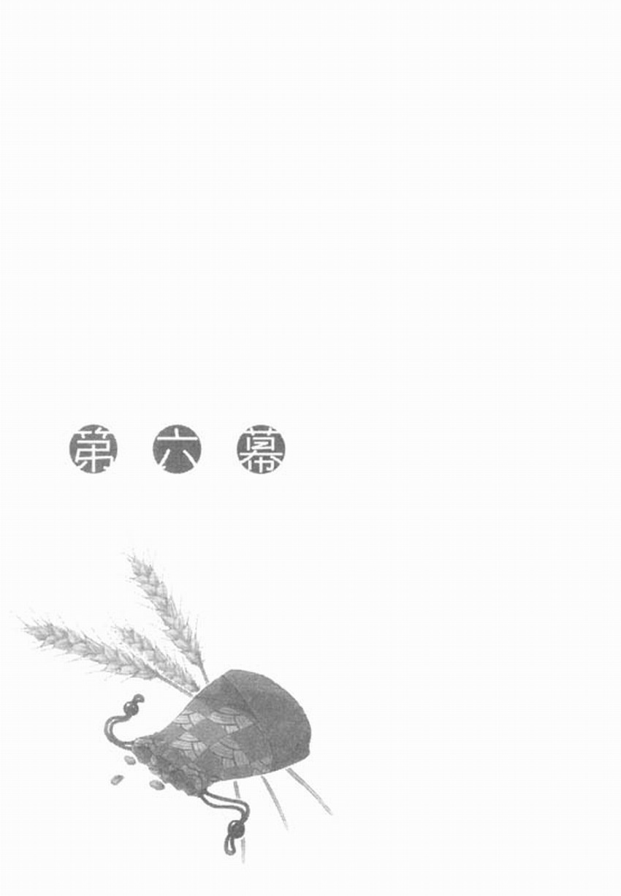

赫蘿突然停下腳步，但原因想必並非她腳邊有老鼠發出慌恐的叫聲跑過去。
羅倫斯在伸手不見五指的黑暗中，把身子轉向赫蘿。因為到現在仍然牽著赫蘿的手，所以不會迷失赫蘿所在的方向。
「怎麼了？」
「汝不覺得空氣微微在震動嗎？」
雖然羅倫斯不是很確定他們兩人在城裡的哪個位置，但從剛剛就一直聞到清水的味道，因此他猜測應該是在市場附近。雖然狀況不是很明確，但羅倫斯至少知道他們距離沿著城鎮外平行流動的河川有些遠。
這麼一來，就不難猜想得到他們正上方有人群與馬車不斷往返。而空氣會震動也是理所當然的事了。
「從上面傳來的吧？」
赫蘿一邊說，羅倫斯可以感覺到她一邊四處張望。然而，這條通道除了前方就是後方。
「如果有鬍子就可以知道得更清楚……」
「是你多心了吧？」
「不……有，有聲音，這是聲音。水，是水花濺起的聲音……」
羅倫斯睜大眼睛，他有預感那是追捕他們的人。
「聲音從前面傳來。這樣不行，往後退。」
羅倫斯在赫蘿說話之前便已回頭跑了出去，赫蘿也急忙地跟在後頭。
「這是一條路通到底嗎？」
「剛剛我們打算前進的方向是一條路通到底，返回的方向在途中會有一條岔路。進了岔路之後，就是複雜的迷宮了。」
「就連咱都沒自信不會迷路吶……喲？」
赫蘿說到一半停下腳步。因為赫蘿突然停下腳步，使得原本牽住的手跟著脫開，羅倫斯頓了頓腳，他慌張地走回頭，這時赫蘿似乎是面向著後方。
「汝把耳朵遮起來。」
「怎麼了？」
「就算跑也會被捉到，對方放狗了。」
如果是被經過專門訓練的獵犬追捕，那一切都完了。就如赫蘿的視力在這片黑暗中能看得一清二楚般，想必獵犬也能靠鼻子及耳朵準確地襲擊。羅倫斯兩人手上並沒有能夠與獵犬對抗的武器，頂多只有隨時佩帶的銀短劍。
不過，我方也有像獵犬一樣的夥伴，那就是賢狼赫蘿。
「呵呵，這叫聲聽來似乎挺笨的。」
赫蘿說完後，羅倫斯也確實聽到微弱的狗吠聲。
或許只是回聲。但從重疊的吠聲聽來，可判斷應該有兩隻以上的獵犬。
赫蘿究竟打算怎麼做呢？
「如果犬太愚蠢而無法理解的話就糗了……總之，汝先摀住耳朵。」
羅倫斯照赫蘿說的話捂上耳朵，他猜得到赫蘿要做什麼——是長嚎。
「吸——」
傳來吸氣的聲音。吸氣的聲音持續很久，不禁讓人懷疑赫蘿如此纖細的身軀，要如何吸入那麼多空氣。停頓了一瞬間後，如地牛翻身般的狼嚎聲響起。
「嗷嗚—！」
那聲音的力量之強勁，足以使手及臉部露出來的皮膚隨之震動。甚至讓人不禁認為地下道是否會因此坍塌。
羅倫斯聽著那彷彿不管再強悍的壯漢，也能夠撕碎其肝臟般的狼嚎。他在途中也忘了那是赫蘿的聲音，死命地摀住耳朵，並縮起身子。
羅倫斯想起在山裡及草原上遭狼群追殺的經驗。無以計數的狼群不僅對地形瞭若指掌，還擁有人類無法與之對抗的運動細胞。這一切一併襲擊過來，而狼嚎就是襲擊的前兆。也因為如此，有些村落甚至在發生瘟疫時，為了趕走瘟疫，所有村民都會模仿狼嚎。
「咳……咳……喉嚨……咱的喉嚨……」
當咆哮聲消失，留下雷聲般的餘音後，羅倫斯拿開摀住耳朵的手抬頭一看，發現赫蘿在黑暗中頻頻咳嗽。那麼細小的喉嚨要發出那麼巨大的聲音，當然會如此了。
可是，這裡沒有水給她喝。
「咱想吃……蘋果吶……咳！」
「以後你想吃多少就吃多少。那些獵犬呢？」
「夾著尾巴逃跑了。」
「那我們也該逃了。他們聽了剛剛的聲音，一定知道我們在這裡。」
「認得路嗎？」
「算吧。」
羅倫斯準備跨出步伐前，轉向赫蘿並伸出左手，赫蘿緊緊抓住他的手。
羅倫斯確認赫蘿抓住他的手之後，便跑了起來。這時，就連羅倫斯的耳朵也能微微聽見人類怒吼的聲晉。
「可是，怎會被發現吶？」
「他們應該不是一開始就知道我們在這裡。想必是在地上找不到我們，所以才潛入地下後恰巧遇上我們吧。」
「是嗎？」
「如果他們早知道我們在這裡。那現在早就被兩面夾攻……？」
「原來如此，確實有道理。」
羅倫斯與赫蘿才聽到先前走來的筆直通道那一頭傳來模糊不清的聲音，就看見微弱的光線射進黑暗的地下道。那是羅倫斯兩人先前下來地下道的位置。
羅倫斯一路走來的人生，並沒有樂觀到會讓他認為那是米隆商行的人回來救他們。
就像用冷水從頭上淋下去時會有的舉動一樣，羅倫斯短短吸了一口氣，加快腳步。
聲音緊接著在地下道響起：
「米隆商行出賣你們了！現在逃跑也是多餘的！」
羅倫斯兩人像要躲避這些話似的，轉進地下道的岔路，後方又再度傳來類似的話語。
事態一旦演變成這樣，無論到哪裡都會聽到同樣的話。雖然羅倫斯不加理會地繼續奔跑。但赫蘿卻顯得不安地說：
「咱們好像被出賣了。」
「想必是賣了不錯的價格吧。不管怎麼說，只要有你在，至少可以打垮米隆商行在這個城市的分行。」
「……原來如此，那肯定會是相當高的價格。」
假設羅倫斯及赫蘿真的被出賣了，那麼，馬賀特能做的選擇，就只有以米隆商行分行作為交換條件。馬賀特如果做出這種選擇，就表示他企圖弄垮分行中飽私囊後，再帶著錢遠走高飛。但羅倫斯不認為米隆商行般的巨大商行會允許這樣的事情發生，而他也不認為馬賀特會覺得自己能夠逃過米隆商行追捕。
也就是說，這只是對方刻意說出的謊言。但對不習慣這類事情的赫蘿來說，似乎起了作用。
雖然赫蘿聽了羅倫斯的回答，一副十分理解的模樣點點頭，但她握住羅倫斯的小手卻加重了些許力道。
羅倫斯像要消除赫蘿小小的不安似的，握緊她的手說：
「好，在這裡右轉……」
「等一下。」
不用等到赫蘿提醒，羅倫斯一轉進轉角就立刻停下腳步。
從緩緩蜿蜒的地下道另一頭深處看見搖來晃去的燈光，並傳來「找到了！」的聲音。
羅倫斯立刻牽起赫蘿的手，朝走來的路筆直地向前跑去。發現羅倫斯兩人的人們也緊接著跑了起來，伹羅倫斯的耳裡早已聽不見他們的腳步聲。
「汝，這路？」
「我認得，沒問題。」
羅倫斯回答的語氣變得急躁，並非因為他的呼吸變得急促，而是因為面對地下道錯綜複雜的奇妙構造，羅倫斯卻只記得米隆商行事先告訴過他，連接出入口之間的通道。
羅倫斯說認得路並不算謊言，但也不算事實。
如果他能夠記得通過多少條岔路，在哪裡右轉、又在哪裡左轉了的話，那就算事實。但只要記錯一個地方，就成了謊言。
腦袋變成一片空白的錯覺湧上羅倫斯心頭。那就像腦海裡聽到群鼠如陣風搖動樹林般逃竄而去的聲音，也像被坍方的石壁絆倒時的感覺。對必須牢記所有應收款項或應付款項債權的旅行商人來說，他們對自己的記憶力有相當的自信。然而，羅倫斯認為有辦法記住路線的自信，卻在他說出話後沒多久就喪失了。
因為地下道實在太複雜了。
「又是死路。」
在T字路口右轉後，只前進一些距離就到了路底。呼吸變得急促的羅倫斯說完話後，不由地踢了牆壁一下。雖然羅倫斯的舉動擺明表現出焦慮之情，但呼吸同樣急促的赫蘿，也不禁加重握住羅倫斯手的力道。
看來梅迪歐商行勢必要在這裡抓住羅倫斯兩人，他們派出相當多的手下。
當然了，這是憑迴響在地下道裡的怒吼聲及腳步聲做出的判斷，地下道裡的回聲過大，就連赫蘿都無法掌握正確人數。
這麼一來，在如此焦慮不安的情緒下，傳入耳中的腳步聲，會讓羅倫斯兩人聯想到大群螞蟻般的追捕者正在追殺他們。
「可惡，還是先回頭。我記不了再多的路了。」
如果勉強再往前進，導致記憶中的路線交錯的話，那就無法挽救了。
雖然羅倫斯此刻對路線的記憶就有些模糊，但看見赫蘿表示同意地點點頭，他便沒說出事實，因為羅倫斯不想讓赫蘿不安。
「還跑得動嗎？」
羅倫斯一向以自己是健步的旅行商人而自豪。儘管呼吸變得急促，但他還能繼續跑下去。然而，赫蘿卻變得只能動動頭部來回答。
或許赫蘿的人類姿態無法像狼一樣行動。
「多少可以。」
趁著急促的呼吸間隔，赫蘿簡短地說道。
「找個適當的地方……」
羅倫斯本想繼續說「休息」兩個字，卻因為看到赫蘿的視線，勉強把話吞回去。
赫蘿的瞳孔在黑暗中瞬間散發朦朧光芒，那是在漆黑的森林裡，冷靜掌握四周狀況的狼眼。
如今這樣的赫蘿是自己的同伴，讓羅倫斯感到安心。羅倫斯豎起耳朵，放輕呼吸的聲音。
啪嚓、啪嚓，附近傳來對方小心翼翼一步步前進的腳步聲。
從羅倫斯站的位置往右方前進，會碰到一條岔路。腳步聲應該就是從岔路的某處傳來。
兩人走來的路是轉過身後的正前方。只要回到這條路，左右兩側都有幾條岔路可走。伺機跑回走來的路，然後逃進岔路才是上策。
羅倫斯把赫蘿的手輕輕往前拉，示意準備奔跑，他感覺到赫蘿輕輕地點點頭。
啪嚓、啪嚓，腳步聲緩緩靠近，雖然傳來的聲音還隔著牆壁多少讓人放心，但梅迪歐商行的手下在背後，像刻意發出腳步聲般不停跑動，並用他們特有的暗號交談。
羅倫斯不禁覺得自己與赫蘿已經身陷對方的陷阱，他們只要拉起網子抓人就好了。
羅倫斯用刺痛的喉嚨嚥下唾液，準備伺機快跑。
若能逮到梅迪歐商行的某人大叫的時候就好了。
羅倫斯這麼祈禱完沒多久。
「哈、哈……」
發出腳步聲的方向傳來少根筋的呼吸聲，有人想打噴嚏。
羅倫斯判斷這聲音是老天爺賜下的福音，他用力握緊赫蘿的手。
「啾！」
從小小的噴嚏聲可判斷對方似乎也自覺不妙，努力想用手摀住嘴巴好遮蓋聲音。
然而，這樣的音量已足夠羅倫斯兩人安靜地快跑。
羅倫斯與赫蘿快跑出去後，轉進左側的第一條岔路。
這時，黑影從眼前晃過。
羅倫斯是在聽到應是赫蘿發出的低吼聲之後，才發現那並非老鼠的影子。
「嗚嚕嚕咕嚕嚕嚕嚕！」
「哇！可惡，在這裡！在這裡啊！」
羅倫斯在黑暗中看到一個類似矮小孩童的黑影左右晃動著，緊接著他感到左邊的臉頰一陣熱。羅倫斯往臉頰一摸，手中粘稠的觸感才讓他發現自己已經被小刀割傷。
等到羅倫斯發現左右晃動著的黑影，原來是赫蘿突然咬住對方拿著小刀的手臂時，他已經忘我地拚命揮動拳頭。
旅行商人時而必須扛著比自己體重還要沉重的行李爬過山頭、越過草原，因此他們的拳頭比銀幣還堅硬。
羅倫斯握緊右拳，使盡全身力氣揮出去，拳頭正中被赫蘿咬住手臂而喊叫的男子嘴巴上方。
一陣令人厭惡，像青蛙被碾碎時發出的「喀啦」聲纏上羅倫斯的拳頭。
羅倫斯用另一隻手伸向赫蘿背後，抓起她的衣服往自己拉近。
被拳頭打中的黑影緩緩向後倒下，羅倫斯連開口說話的時間都沒有。就直接往後跑，企圖尋找其它通道。
然而，跑出去沒多久後，羅倫斯便發現剛剛對方並非偶然打了噴嚏。而是故意設下陷害羅倫斯及赫蘿的陷阱。
咚！在一陣撞擊後，羅倫斯感到全身的血液逆流。
羅倫斯往後退，準備轉過身來的那一瞬間，刀子朝羅倫斯的身體直直伸來。
「神啊！請原諒我的罪過。」
聽到這句話，羅倫斯確信對方打算殺死自己。
事實上，對方在一片黑暗中，屏氣凝神地伺機襲擊，想必他一定以為自己殺死羅倫斯了。
然而，老天爺並沒有捨棄羅倫斯。刀子刺進羅倫斯左腕上方的位置。
「懺悔罪過前……」
羅倫斯一邊說，一邊把腳抬高，朝男子胯下往上踢。
「先懺悔平時的言行吧！」
羅倫斯踢開沒發出半點聲音就昏倒的男子，用右手抓住赫蘿的手臂快跑。
梅迪歐商行的手下逐漸跑近他們的腳步聲，呼應著四處傳來的喊叫聲，傳到兩人耳中。
羅倫斯兩人轉進左邊的岔路，又再立刻向右轉。這並非羅倫斯有什麼計策，也不是他還記得路怎麼走。
羅倫斯只想拚命跑，現在的情勢逼得他無法停下腳步。左手臂彷彿陷在泥沼般沉重，又像被燒得火紅的鐵棒刺入般灼熱。然而，左手掌卻冷冰冰的，想必是血液不斷流出來的緣故。
照這個情況看來，應該跑不了多久。羅倫斯常在旅途中受傷，他大概知道自己的體力極限。
羅倫斯拚命奔跑。不知跑了多久，在逐漸模糊的意識當中，交錯迴響的怒吼聲及腳步聲，彷彿深夜草原的傾盆大雨般，不斷侵蝕著羅倫斯的腦袋。
當這些聲音逐漸遠離羅倫斯的意識時，羅倫斯不僅沒有餘力顧及赫蘿，他連自己的身體還能支撐多久都沒把握。
「羅倫斯。」
羅倫斯聽到有人呼喊他的名字。心想死神還是來了。
「羅倫斯，汝沒事吧？」
羅倫斯回過神來。當他察覺時，才發現自己的身體正靠在石壁上。
「呼，還好。咱叫了好幾聲，汝都沒反應。」
「……唔……沒事，只是有點睏了而已。」
羅倫斯試著擠出笑容，但不知道有沒有成功。赫蘿有些生氣地捶打羅倫斯的胸膛說：
「振作一點，再一下就到了。」
「……到哪裡？」
「汝沒聽到嗎？有陽光的味道，咱剛剛說過有地方可以通往地上啊？」
「喔，嗯，」
雖然完全沒有印象，但羅倫斯點點頭回答。他把身子從牆上挪開。搖晃身體準備踏出步伐時，發現左手臂不知何時已包紮上取代紗布的布條。
「……這紗布？」
「咱撕下袖子當紗布。汝連這都不知道啊？」
「沒有，我知道，沒事的。」
這次羅倫斯確實露出笑容回答，於是赫蘿也沒再多說些什麼。只不過繼續往前走時，換或赫蘿走在前頭。
「再一下就到了。走到那條通道的盡頭，再往右轉……」
赫蘿拉著羅倫斯的手一邊頻頻回頭，一邊說話，但說到一半就停了下來。羅倫斯也非常清楚赫蘿停下來的原因。
那是因為有腳步聲從後方傳來。
「快點、快點。」
赫蘿用近乎沙啞的聲音小聲催促著，羅倫斯擠出最後的力氣邁開腳步。
傳來腳步聲的位置雖然很近，但聽來仍有一段距離。只要能夠爬出地面上。以羅倫斯身受重傷的模樣，應該不難向城裡的居民求助。
這麼一來，想必梅迪歐商行手下也不願意在眾目睽睽之下引起騷動，只要趁這段時間與米隆商行取得聯繫，再設法讓赫蘿一個人逃跑就好了。現在最重要的是與米隆商行取得聯繫，重新擬定計劃。
羅倫斯一邊思考這些事情，一邊拖著沉重如石的身軀向前進，終於如赫蘿所說看到了光線。
光線似乎是從盡頭的右方射向左方，後方的腳步聲也越來越近。不過，照這樣繼續前進，似乎有機會成功逃脫。
赫蘿用力拉著羅倫斯的右臂催促著他。羅倫斯也盡其所能跟上腳步。
兩人終於在盡頭向右轉。
在通道的最深處看到明亮的光線。
「這裡可通往地上，再一下就到了。」
赫蘿的聲音恢復活力，羅倫斯像是受到鼓舞似地往前進。
這場狩獵是獵物以微小差距獲得勝利。
羅倫斯如此深信。
至少在赫蘿還沒用快哭出來的聲音說話之前，是這樣的。
「怎麼會這樣……」
羅倫斯聽到赫蘿泫然欲泣的聲音，抬起頭來。
即使低著頭，已習慣黑暗地下道的眼睛依然覺得射進來的光線刺眼。因此羅倫斯抬起頭後有好一會兒無法正常睜眼，等到他習慣光線之後，也明白是怎麼回事了。
眼前看到的是已不再使用的水井，想必是作為地下水道使用時所設。光線正是從圓形的洞口射進來。
然而，從地下道透過這座水井仰望的天空是如此遙遠。羅倫斯挺起背脊伸手或許還勉強碰得到天花板，但水井的出口是在天花板更上方。
在沒有繩子也沒有梯子的情況下，兩人根本無法爬上洞口。
就像放高利貸的人因為通往天國的路途遙遠而感到絕望般，赫蘿與羅倫斯沉默不語。
然後，腳步聲彷彿確信已將兩人逼到盡頭般，終於從轉角出現。
「找到了！」
兩人聽到喊叫聲後，總算回過頭。
赫蘿抬頭望著羅倫斯，羅倫斯用還使得上力的右手拔出腰上的短劍，緩緩擋在赫蘿面前。
「退後。」
羅倫斯本打算站到更前面一些，但雙腳的力氣似乎已經用盡了似的，無法再移動半步。
「汝的身體這樣不行吧。」
「胡說什麼，我還可以。」
羅倫斯雖然有辦法故作輕鬆地說，但卻沒有多餘的力氣回過頭看赫蘿。
「這種話就算不是咱的耳朵，也聽得出來是謊言。」
赫蘿有些生氣地說道，但羅倫斯不理會她，直視著前方。
就羅倫斯視線所及，就有五個梅迪歐商行手下，每人手上都拿著木棍或刀子。不僅如此。他們後方還傳來許多腳步聲。
然而，他們理應處於壓倒性有利的局勢，卻沒有立刻靠近，只是在轉角注視著羅倫斯兩人。
雖然猜得到他們是在等待支持，但要對付羅倫斯兩人，五個人應該就綽綽有餘了。畢竟羅倫斯的樣子怎麼看也知道不成戰力，赫蘿又是個柔弱的女孩。
儘管如此他們還是沒有前進，好幾個人的腳步聲終於來到轉角。原本對峙的五個人轉過身子，讓出路來。
「啊。」
赫蘿看到出現在轉角的人不禁叫了出來。
羅倫斯也差一點叫了出來。
出現在轉角的人是葉勒。
「我聽到報告所形容的面貌時，就想到可能是你。但沒想到真的就是你啊，羅倫斯。」
不同於在城牆保護下安居樂業的居民，也不同於滿身風沙汗水四處奔波的旅行商人，葉勒的身上帶著大地與太陽的色彩，他露出些許悲傷的表情走到前面。
「我才嚇了一跳。說到金屬的味道就只會聯想到鐮刀和鋤頭的帕斯羅村，竟然會圖謀如此狂妄自大的銀幣交易。」
「知道這筆交易的村民很少。」
葉勒說話的神情彷彿自己不是村民似的，但看了他身上穿著的衣物，也就明白他為何會有如此反應了。只要看那衣物的色澤及質料，就能夠明白他與梅迪歐商行的關係有多深。
他身上穿的儘是過著樸實農村生活的村民買不起的衣物。
「這個我們以後再找機會好好聊吧，沒時間了。」
「你也太冷淡了吧，葉勒。我難得去村裡，也沒能見到你。」
「相對地，你見到別人了吧？」
葉勒把視線移向羅倫斯身後的赫蘿，繼續說：
「雖然我也不太敢相信，但這與傳說中所描述的也未免太像了，就像長久住在村子的麥田里，能夠自在操控豐收與否的狼之化身。」
雖然知道赫蘿微微縮了一下身子，但羅倫斯沒有回頭。
「把那傢伙交給我們！我們要把那傢伙送給教會，與舊時代訣別。」
葉勒往前踏出一步說：
「羅倫斯。只要有那傢伙，就可以打垮米隆商行。如果再加上撤銷關稅的話，我們村落的麥子就可以創造出莫大利益。這對與我們村落交易麥子的商人來說，也是同樣的道理。沒有任何東西比不會被課稅的產品還賺錢吧？」
當葉勒前進到距離兩步路的位置時，赫蘿抓住羅倫斯的衣服。即使羅倫斯連腳步都站不穩，也能夠察覺到她的手在顫抖。
「羅倫斯，對於從前你願意買下我們村落因重稅而不受歡迎的麥子，所有村民到現在都仍然心存感激。要讓你有優先購買麥子的權利，一點兒也不困難。況且，以我倆的交情來說，就更沒問題了。我說羅倫斯啊，既然你是個商人，就應該懂得計算損益吧？」
葉勒的話語一點一滴慢慢滲入羅倫斯的腦裡。不用支付關稅的麥子，就等於麥穗上長了黃金一樣。只要接受葉勒的交易，相信財產一定能夠不斷倍增。
等到資金足夠時，或許就可以在帕茲歐開一間自己的商店。這麼一來，想必可以拿著與帕斯羅村交易麥子的優先權當武器，一步一步拓展事業。
葉勒的話帶來無限大的夢想。
「我當然懂得計算損益。」
「喔，羅倫斯。」
葉勒表情變得開朗，張開雙手。赫蘿加重了抓住衣服的力道。
羅倫斯用僅存的力氣回過頭，赫蘿也隨之抬頭仰望羅倫斯。
赫蘿琥珀色的眼珠流露出悲傷的神情注視羅倫斯，隨即垂下眼簾。
羅倫斯緩緩把身子轉向前方。
「可是，遵守合約是當個優良商人的第一條件。」
「羅倫斯？」
葉勒用懷疑的口吻反問羅倫斯，羅倫斯繼續說：
「在莫名其妙的緣由下撿到的怪女孩想回到北方。我與她訂定了一同旅行的合約啊。葉勒，要我違反合約，我辦不到。」
「汝……」
聽著赫蘿驚訝的聲音，羅倫斯直直瞪視葉勒。
葉勒一副無法理解的模樣搖搖頭，深深歎了口氣後。抬頭說：
「那麼，我也只能執行我的合約了。」
葉勒稍稍舉高右手，原本默默注視交談狀況的梅迪歐商行手下。擺出迎戰姿態。
「羅倫斯，我們的友情真是短暫。」
「旅行商人總是避免不了分離。」
「殺了男的無所謂，但女孩得給我活捉！」
葉勒用判若兩人的冷漠口吻說完後，梅迪歐商行手下隨即向前逼近。
羅倫斯的右手使力握緊銀短劍，並設法讓有如附著在地面上的雙腳往前移動。
只要能夠多爭取一些時間，或許米隆商行的人會來到這裡解救他們。羅倫斯一邊抱著這樣的希望，一邊狼狽地揮動短劍。
就在此刻，赫蘿用纖細的手臂環抱羅倫斯的身體。
「呃，赫蘿，你做什麼？」
赫蘿纖細的手臂緊緊抱住羅倫斯，硬是把羅倫斯的身體往下拉倒。
雖然羅倫斯心想赫蘿哪來這麼大力氣，但又想應該只是自己的身體完全失去抵抗的力量了吧。
事實上，赫蘿似乎沒法完全支撐羅倫斯身體的重量，所以羅倫斯幾乎是屁股著地跌了下去。
跌在地面的撞擊使羅倫斯手上的短劍飛了出去。
羅倫斯急忙想站起身子撿回短劍，卻沒能站得起來。他甚至沒力氣支撐伸出去的手臂。身體往前臥倒在地。
「赫蘿……撿起短劍。」
「已經夠了。」
「赫蘿？」
赫蘿不理會羅倫斯，她把手放在往前臥倒在地。動彈不得的羅倫斯左手臂上。
「可能會有些痛，忍耐一下。」
「做……」
赫蘿沒等羅倫斯把話說完，便解開纏在羅倫斯左手臂上的布條。把鼻子湊近暴露的傷口嗅了一下味道。
羅倫斯想起來了。他想起自己初遇赫蘿時的對話。那時他要求赫蘿變身，好向他證明赫蘿是真正的狼。
當時赫蘿很自然地回答他：
變回原本的模樣所需的東西可以是：
變回原本的模樣所需的東西可以是一些麥子……
也可以是鮮血。
「在等什麼！還不快抓起來！」
葉勒的聲音響起，因為赫蘿的怪異舉動而停下腳步的梅迪歐商行手下回過神來，架起武器往前逼近。
在這之後，赫蘿閉起眼睛，隨即露出嘴唇底下的兩根尖牙，朝羅倫斯的傷口刺入。
「在、在吸血啊！」
出現喊叫聲。
赫蘿聽到聲音稍微睜開眼睛，她看了羅倫斯一眼。
羅倫斯看見赫蘿悲傷的笑容，便明白自己當下露出什麼樣的表情。
吸血是惡魔與妖怪才會有的行為。
「不准退縮！她只是個被惡魔附身的女孩！抓住她！」
葉勒的吆喝聲也無法迫使男子們往前邁進。
赫蘿緩慢地從羅倫斯的手臂上鬆開嘴巴，她的身體已經開始起了變化。
「咱會……」
赫蘿的長髮唰唰地，變成明顯不是人類所有的毛髮。從撕裂的袖口露出來的手臂。也逐漸變成動物的前足。
「永遠記得汝最後選擇了咱。」
赫蘿不是用手，而是用火紅的舌頭舔去嘴角滴落的血滴。那景象鮮明地留在羅倫斯的腦海裡。
「汝啊。」
赫蘿站起身子面對羅倫斯，臉上還是露出了悲傷的笑容。最後她輕聲說：
「別再看了。」
赫蘿的身體在下一刻整個膨脹起來，隨著布料撐破的聲音，褐色的毛髮彷彿炸開似地從布料底下湧出。裝滿麥子的皮袋夾雜在破碎不堪的布料當中掉了下來。
想到赫蘿托宿在那些麥子裡，羅倫斯幾乎是反射性把手伸向皮袋。等他接著抬起頭來時，眼前已出現一隻巨大的狼。
突然出現的巨大褐色狼，彷彿從沉睡中醒來似地左右甩甩頭，並用前腳踏了幾次地面，確認身體的狀況。
狼的腳掌上有著鐮刀般的爪子；露出來的巨大牙齒，大到可明顯看出每根牙齒的形狀；嘴巴則大得可以輕易地一口吞下人類。
狼身體的重量感使得四周的空氣變得沉重，散發的熱氣彷彿一靠近就會融化似的。然而，狼的眼睛卻是極其冷靜且清澈。
逃不了。
只要是人類都會這麼想吧。
「哇、哇啊啊啊啊啊啊啊啊啊啊啊！」
就在某個人大叫之後，現場幾乎所有人都丟下武器落荒而逃。有兩個人應該是因為過度驚恐，以致於把武器朝狼丟去。
巨大的狼身手矯健地用嘴巴咬住丟向它的武器，易如反掌地把鐵製的武器咬得粉碎。
這就是神。
在北方國度，會把人類沒辦法應付的東西形容成神。
從前的羅倫斯不明白為何會如此形容，但現在的他再明白不過了。
沒辦法應付，這種狼真是沒辦法應付。
「嗚！」
「喔！」
丟出武器的兩人發出如此簡短的聲音，甚至讓人懷疑那根本不成聲音。
兩人被狼巨大的前足掃開，撞上牆壁。那聲音就像青蛙被輾碎時的叫聲吧。
接著，狼彷彿在地面上滑動般跑了出去。
『汝等啊，別以為自己可以活著走出去。』
粗獷低沉的聲音響起，緊接著傳來爪子與金屬碰撞的聲音，以及突然中斷的哀號聲。羅倫斯死命撐起身子，追了上去。
然而，慘劇在一瞬間就結束了。
狼一停下動作，隨即傳來想必是最後一名男子的聲音。
「神、神總是這樣。總是……總是這麼不講理？」
那是葉勒的聲音。
沒有回答。取而代之的是張開巨大嘴巴的聲音。羅倫斯忍不住大叫：
「赫蘿，住手！」
喀鏘一聲，應該是合上巨大嘴巴的聲音吧。
羅倫斯的腦海裡不禁浮現葉勒上半身被吃掉的畫面，他怎麼也無法認為葉勒能夠逃開。這就跟被獵犬盯上的鳥兒，絕對無法飛往天空的道理一樣。
然而，一陣沉默後，赫蘿輕鬆地在狹窄的通道轉過身來，她的嘴巴並沒有沾上血跡。
不過，精疲力盡的葉勒卻勾在她的牙齒上暈了過去，
「赫蘿……」
羅倫斯喊了一聲赫蘿的名字，同時安心地呼了口氣。赫蘿把葉勒丟下地面，但是視線沒有移到羅倫斯身上。
她簡短地說了一句：
『麥子拿來。』
聽到與碩大體型相當搭調的低沉聲音，羅倫斯嚇了一跳，頓時縮了一下身子。
即使明白那是赫蘿，但羅倫斯就是沒辦法應付自如。如果被這樣的赫蘿看上一眼，羅倫斯也不敢斷言自己能夠保持理智。
畢竟這隻狼太令人敬畏了。
『麥子拿來。』
又聽到一次同樣的話？羅倫斯下意識地點點頭，打算遞出手中的皮袋。
這時羅倫斯突然想到某件事，不祥的預感湧上他心頭。
「拿麥子要做什麼？」
聽到羅倫斯的詢問，赫蘿沉默了一會兒，突然踏出前腳。
羅倫斯在那一刻，感覺到一股重壓迎向自己，不禁挪開身子。
當羅倫斯看到赫蘿滿口牙齒的嘴巴變得有些扭曲，他察覺到自己的舉動徹底錯了。
『這就是答案，麥子拿來。』
雖然羅倫斯明白赫蘿打算拿著麥子離開，但赫蘿的話彷彿帶有強大的魔力似的，讓他不由地伸出手臂。
然而，羅倫斯的身體已沒有支撐手臂、及拿住小皮袋的力氣。
皮袋從羅倫斯停在半空中的手臂上掉落，手臂也跟著猛然落地。
羅倫斯連撿起皮袋的力氣都沒有，他露出絕望的眼神注視著皮袋。
『受汝照顧了。』
赫蘿一邊這麼說，一邊走近，她用巨大的嘴巴巧妙地撿起從羅倫斯手上掉落的皮袋。
琥珀色的眼珠到最後都沒看羅倫斯一眼，赫蘿退後了兩、三步之後，又再巧妙地轉過身子，打算離去。
赫蘿那前端帶著白毛，讓她引以為傲的尾巴映入羅倫斯眼簾。整齊的毛髮哀傷地垂下，搖來晃去地逐漸遠去。
羅倫斯突然大喊。或許他的聲音不像在喊叫，但他已用盡了全力。
「等、等一下！」
儘管如此，赫蘿還是沒有停下腳步。
羅倫斯恨自己為何在赫蘿踏出前足時，反射性地挪開身子。赫蘿說過很多次，說她討厭別人看到她的模樣而露出畏懼的眼神。
然而，羅倫斯的身體卻反射性地畏懼赫蘿。他面對人類完全無法應付，明顯是別種生物的赫蘿，懼怕得畏縮發抖。
儘管如此，羅倫斯還是不願意放棄。儘管如此，羅倫斯仍然希望留住赫蘿。
「赫蘿！」
他用沙啞的聲音呼喊。
羅倫斯心想「沒用嗎？」但赫蘿在此時停下腳步。
只能趁現在。只能趁現在想辦法讓赫蘿回心轉意，否則就再也見不到赫蘿了。
可是，該說什麼好呢？許多話語在羅倫斯的腦海閃現又消失。
事到如今要說自己不怕赫蘿，一點說服力都沒有，羅倫斯到現在還是害怕赫蘿的模樣。儘管如此，羅倫斯仍然希望留住赫蘿，他找不到適當的話語來表現自己如此矛盾交錯的心情。
但是，羅倫斯仍然死命地思考，他從被赫蘿恥笑太貧乏的語彙當中，拚命拼湊能夠留住赫蘿的話語。
「你以為……你撕破的衣服多少錢啊？」
這就是羅倫斯最後拼湊出來的話語。
「我不管你是神還是什麼……都要賠償我，你賺來的七十枚銀幣根本不夠。」
羅倫斯盡量表現出憤怒的情緒，不，有一半是真的因為氣憤而說出這些話。
羅倫斯覺得就算開口要求赫蘿不要走，也絕對留不住她。因此，羅倫斯心想就算他害怕赫蘿的模樣，也非得要赫蘿留下的理由，就只有這件事了。
商人對金錢的怨恨比山谷還要深，商人討起債來會比浮在夜空中的明月更緊追不捨。
為了傳達這樣的意識，羅倫斯用憎恨的口吻大喊，羅倫斯不是在阻止赫蘿從他眼前離去，是告訴赫蘿即使離開也沒用。
「你以為我花了多少年存下來的積蓄……才買齊那些衣物啊？我會拚命追的……一路追到北方的森林去！」
羅倫斯大喊，他的聲音在地下道內微弱地迴響，終至消失。
赫蘿原本只是安靜地站在原處，巨大的尾巴突然甩動起來。
赫蘿會轉過身來嗎？
羅倫斯已耗盡全身的力氣，支撐不住的身體垮了下來，但近似焦躁的期待感卻讓他緊張得快要不能呼吸。
然而，赫蘿卻再度邁開步伐。
「達、達」赫蘿發出小小的腳步聲往前走去。
羅倫斯發現自己的視線變得模糊。
我不是在哭。在逐漸陷入無底深淵的意識當中。羅倫斯只能努力這樣想。
（第六幕 完）